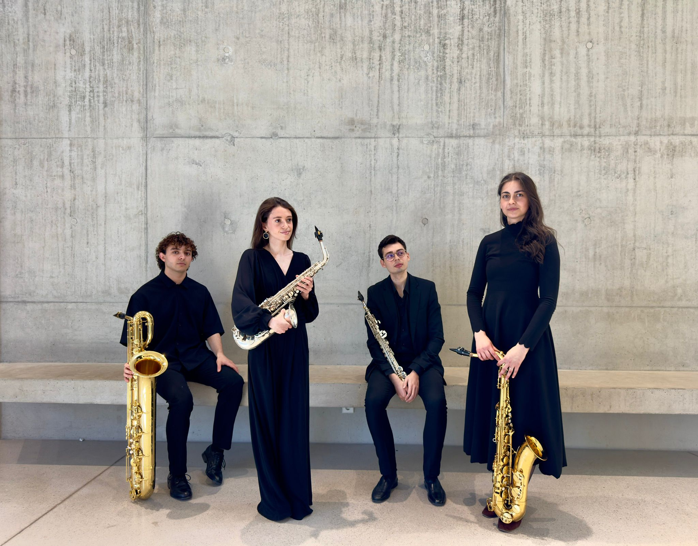

KORRIDOR
QUARTET.
Four musicians. One shared curiosity.
DISCOVER THE QUARTET ↘Four voices.
One Korridor.
Music shaped by curiosity, collaboration and the search for new ways of listening.

Four voices.
New perspectives.
Founded in late 2025 by students at the University of Music and Performing Arts Vienna, Korridor Quartet grew out of a shared curiosity for contemporary music and its possibilities.
The ensemble places collaboration at the centre of its work, joining forces with composers to develop and premiere new pieces for saxophone quartet. Through extended techniques and explorations of sound, movement and space, Korridor seeks to open contemporary music to new audiences.
The quartet has performed at the SUENA Festival für zeitgenössische iberoamerikanische Musik and is developing an interdisciplinary project with contemporary arts practitioners. In 2026, it received the Anerkennungspreis at the Sounding Visions Awards.
In sound.
Recordings are listed provisionally until the performances have been identified and confirmed.
Provisional selection of the two Google Drive links; please confirm which recordings feature Korridor Quartet. Public viewing permissions are required for embedded playback.
Make space
for sound.
For Korridor Quartet bookings and collaborations, please get in touch.
EMAIL ENQUIRY ↗